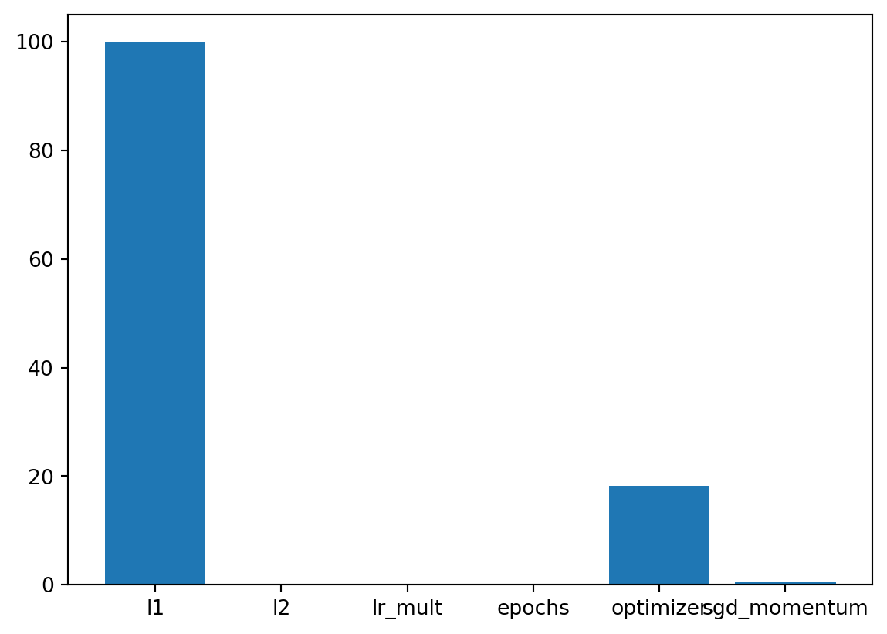
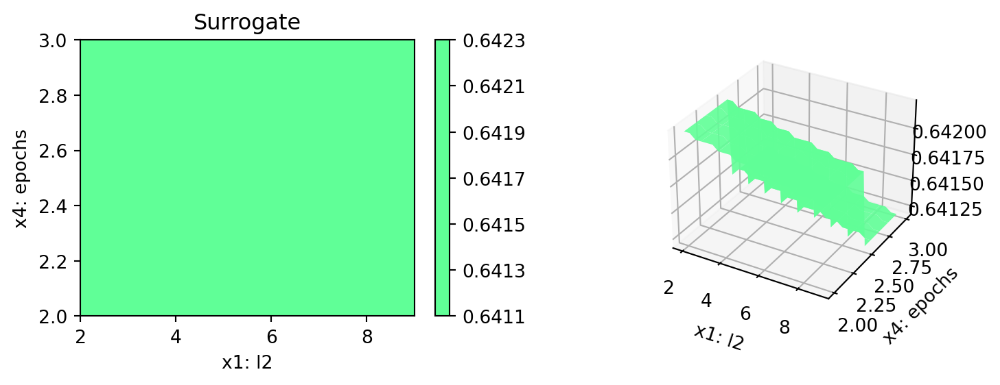
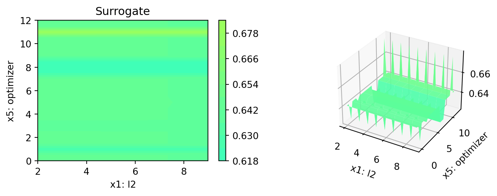
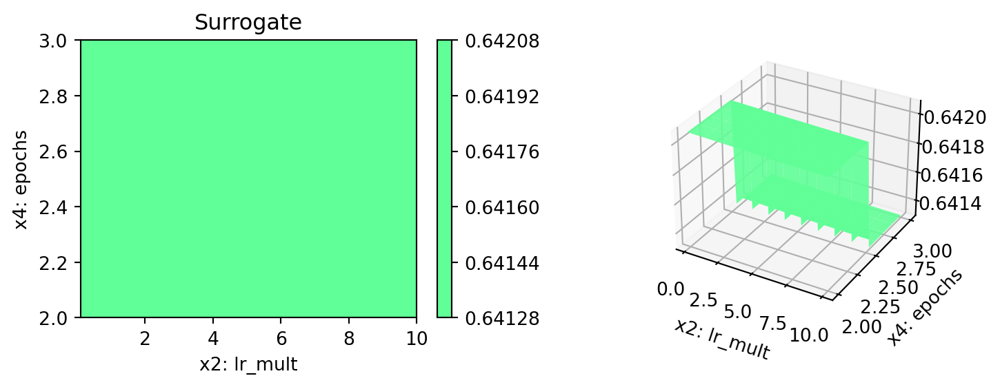
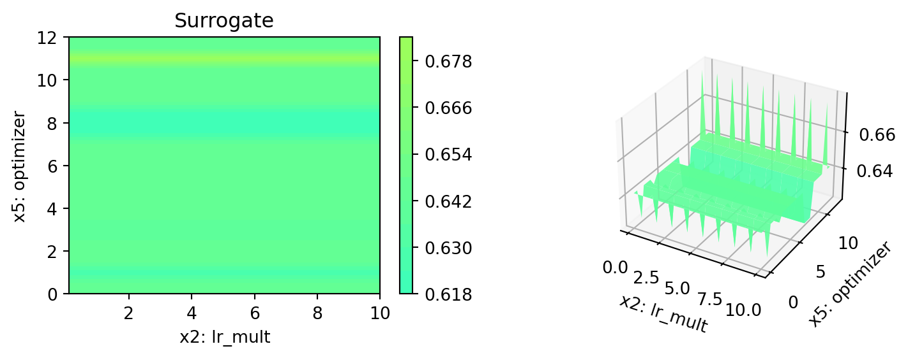
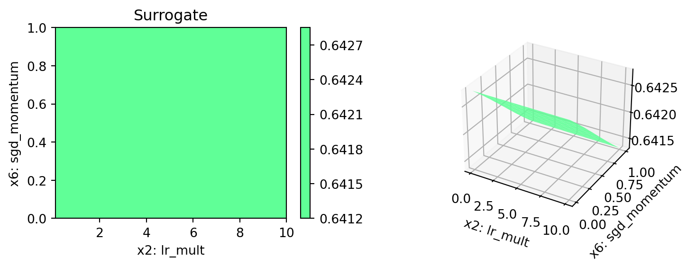
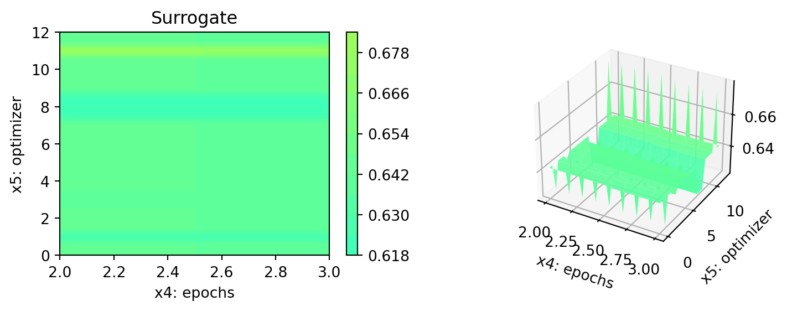
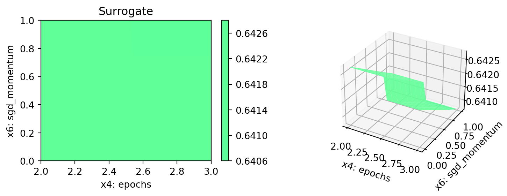
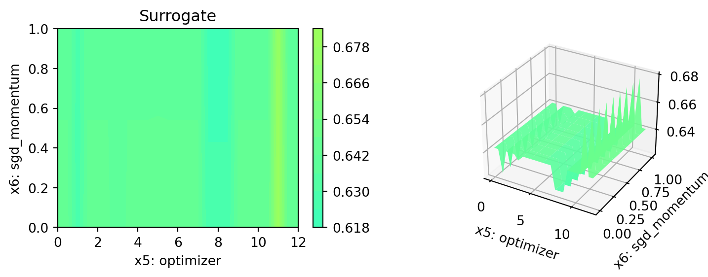

MAX_TIME = 1
INIT_SIZE = 5
DEVICE = None # "cpu" # "cuda:0"11 Hyperparameter Tuning: PyTorch With fashionMNIST Data Using Hold-out Data Sets
from spotPython.utils.device import getDevice
DEVICE = getDevice(DEVICE)
print(DEVICE)mpsimport pickle
import socket
from datetime import datetime
from dateutil.tz import tzlocal
start_time = datetime.now(tzlocal())
HOSTNAME = socket.gethostname().split(".")[0]
experiment_name = '11-torch' + "_" + HOSTNAME + "_" + str(MAX_TIME) + "min_" + str(INIT_SIZE) + "init_" + str(start_time).split(".", 1)[0].replace(' ', '_')
experiment_name = experiment_name.replace(':', '-')
experiment_name'11-torch_bartz09_1min_5init_2023-06-14_23-39-41'This notebook exemplifies hyperparameter tuning with SPOT (spotPython). The hyperparameter software SPOT was developed in R (statistical programming language), see Open Access book “Hyperparameter Tuning for Machine and Deep Learning with R - A Practical Guide”, available here: https://link.springer.com/book/10.1007/978-981-19-5170-1.
pip list | grep "spot[RiverPython]"spotPython 0.2.29
spotRiver 0.0.93Note: you may need to restart the kernel to use updated packages.# import sys
# !{sys.executable} -m pip install --upgrade build
# !{sys.executable} -m pip install --upgrade --force-reinstall spotPythonfrom tabulate import tabulate
import copy
import warnings
import numbers
import json
import calendar
import math
import datetime as dt
import numpy as np
from math import inf
import pandas as pd
from scipy.optimize import differential_evolution
import matplotlib.pyplot as plt
import torch
from torch import nn
from torch.utils.data import DataLoader
from torchvision import datasets
from torchvision.transforms import ToTensor
from functools import partial
import torch.nn.functional as F
import torch.optim as optim
from torch.utils.data import random_split
import torchvision
import torchvision.transforms as transforms
from spotPython.spot import spot
from spotPython.hyperparameters.values import (
add_core_model_to_fun_control,
assign_values,
convert_keys,
get_bound_values,
get_default_hyperparameters_for_core_model,
get_default_values,
get_dict_with_levels_and_types,
get_values_from_dict,
get_var_name,
get_var_type,
iterate_dict_values,
modify_hyper_parameter_levels,
modify_hyper_parameter_bounds,
replace_levels_with_positions,
return_conf_list_from_var_dict,
get_one_core_model_from_X,
transform_hyper_parameter_values,
get_dict_with_levels_and_types,
convert_keys,
iterate_dict_values,
)
from spotPython.torch.traintest import evaluate_cv, evaluate_hold_out
from spotPython.utils.convert import class_for_name
from spotPython.utils.eda import (
get_stars,
gen_design_table)
from spotPython.utils.transform import transform_hyper_parameter_values
from spotPython.utils.convert import get_Xy_from_df
from spotPython.utils.init import fun_control_init
from spotPython.plot.validation import plot_cv_predictions, plot_roc, plot_confusion_matrix
from spotPython.data.torch_hyper_dict import TorchHyperDict
from spotPython.fun.hypertorch import HyperTorch
warnings.filterwarnings("ignore")
# Neural Net specific imports:
from spotPython.torch.netfashionMNIST import Net_fashionMNISTprint(torch.__version__)
# Check that MPS is available
if not torch.backends.mps.is_available():
if not torch.backends.mps.is_built():
print("MPS not available because the current PyTorch install was not "
"built with MPS enabled.")
else:
print("MPS not available because the current MacOS version is not 12.3+ "
"and/or you do not have an MPS-enabled device on this machine.")
else:
mps_device = torch.device("mps")
print("MPS device: ", mps_device)2.0.1
MPS device: mps11.1 Step 1: Initialization of the Empty fun_control Dictionary
fun_control = fun_control_init(task="classification",
tensorboard_path="runs/11_spot_hpt_torch_fashion_mnist",
device=DEVICE)11.2 Step 2: Load fashionMNIST Data
def load_data(data_dir="./data"):
# Download training data from open datasets.
training_data = datasets.FashionMNIST(
root=data_dir,
train=True,
download=True,
transform=ToTensor(),
)
# Download test data from open datasets.
test_data = datasets.FashionMNIST(
root=data_dir,
train=False,
download=True,
transform=ToTensor(),
)
return training_data, test_datatrain, test = load_data()
train.data.shape, test.data.shape(torch.Size([60000, 28, 28]), torch.Size([10000, 28, 28]))n_samples = len(train)
# add the dataset to the fun_control
fun_control.update({"data": None,
"train": train,
"test": test,
"n_samples": n_samples,
"target_column": None})11.3 Step 3: Specification of the Preprocessing Model
# categorical_columns = []
# one_hot_encoder = OneHotEncoder(handle_unknown="ignore", sparse_output=False)
# prep_model = ColumnTransformer(
# transformers=[
# ("categorical", one_hot_encoder, categorical_columns),
# ],
# remainder=StandardScaler(),
# )
prep_model = None
fun_control.update({"prep_model": prep_model})11.4 Step 4: Select algorithm and core_model_hyper_dict
spotPython implements a class which is similar to the class described in the PyTorch tutorial. The class is called Net_fashionMNIST and is implemented in the file netcifar10.py. The class is imported here.
Note: In addition to the class Net from the PyTorch tutorial, the class Net_CIFAR10 has additional attributes, namely:
- learning rate (
lr), - batchsize (
batch_size), - epochs (
epochs), and - k_folds (
k_folds).
Further attributes can be easily added to the class, e.g., optimizer or loss_function.
core_model = Net_fashionMNIST
fun_control = add_core_model_to_fun_control(core_model=core_model,
fun_control=fun_control,
hyper_dict=TorchHyperDict,
filename=None)11.5 Step 5: Modify hyper_dict Hyperparameters for the Selected Algorithm aka core_model
11.5.1 Modify hyperparameter of type factor
# fun_control = modify_hyper_parameter_levels(fun_control, "leaf_model", ["LinearRegression"])
# fun_control["core_model_hyper_dict"]11.5.2 Modify hyperparameter of type numeric and integer (boolean)
# fun_control = modify_hyper_parameter_bounds(fun_control, "delta", bounds=[1e-10, 1e-6])
# fun_control = modify_hyper_parameter_bounds(fun_control, "min_samples_split", bounds=[3, 20])
#fun_control = modify_hyper_parameter_bounds(fun_control, "merit_preprune", bounds=[0, 0])
# fun_control["core_model_hyper_dict"]
fun_control = modify_hyper_parameter_bounds(fun_control, "k_folds", bounds=[0, 0])
fun_control = modify_hyper_parameter_bounds(fun_control, "patience", bounds=[2, 2])
fun_control = modify_hyper_parameter_bounds(fun_control, "epochs", bounds=[2, 3])11.6 Step 6: Selection of the Objective (Loss) Function
from torch.nn import CrossEntropyLoss
loss_function = CrossEntropyLoss()
fun_control.update({"loss_function": loss_function})In addition to the loss functions, spotPython provides access to a large number of metrics.
- The key
"metric_sklearn"is used for metrics that follow thescikit-learnconventions. - The key
"river_metric"is used for the river based evaluation (Montiel et al. 2021) viaeval_oml_iter_progressive, and - the key
"metric_torch"is used for the metrics fromTorchMetrics.
TorchMetrics is a collection of more than 90 PyTorch metrics1.
Because the PyTorch tutorial uses the accuracy as metric, we use the same metric here. Currently, accuracy is computed in the tutorial’s example code. We will use TorchMetrics instead, because it offers more flexibilty, e.g., it can be used for regression and classification. Furthermore, TorchMetrics offers the following advantages:
- A standardized interface to increase reproducibility
- Reduces Boilerplate
- Distributed-training compatible
- Rigorously tested
- Automatic accumulation over batches
- Automatic synchronization between multiple devices
Therefore, we set
import torchmetrics
metric_torch = torchmetrics.Accuracy(task="multiclass", num_classes=10).to(fun_control["device"])
fun_control.update({"metric_torch": metric_torch})
Minimization and maximization:
spotPython performs minimization by default. If accuracy should be maximized, then the objective function has to be multiplied by -1. Therefore, weights is set to -1 in this case.
fun = HyperTorch(seed=123, log_level=50).fun_torch
loss_function = CrossEntropyLoss()
weights = 1.0
shuffle = True
eval = "train_hold_out"
show_batch_interval = 100_000
path="torch_model.pt"
fun_control.update({
"data_dir": None,
"checkpoint_dir": None,
"horizon": None,
"oml_grace_period": None,
"weights": weights,
"step": None,
"log_level": 50,
"weight_coeff": None,
"metric_river": None,
"metric_sklearn": None,
"loss_function": loss_function,
"shuffle": shuffle,
"eval": eval,
"show_batch_interval": show_batch_interval,
"path": path,
})fun_control{'data': None,
'train': Dataset FashionMNIST
Number of datapoints: 60000
Root location: ./data
Split: Train
StandardTransform
Transform: ToTensor(),
'test': Dataset FashionMNIST
Number of datapoints: 10000
Root location: ./data
Split: Test
StandardTransform
Transform: ToTensor(),
'loss_function': CrossEntropyLoss(),
'metric_sklearn': None,
'metric_river': None,
'metric_torch': MulticlassAccuracy(),
'metric_params': {},
'prep_model': None,
'n_samples': 60000,
'target_column': None,
'shuffle': True,
'eval': 'train_hold_out',
'k_folds': None,
'optimizer': None,
'device': 'mps',
'show_batch_interval': 100000,
'path': 'torch_model.pt',
'task': 'classification',
'save_model': False,
'weights': 1.0,
'writer': <torch.utils.tensorboard.writer.SummaryWriter at 0x10905ec20>,
'core_model': spotPython.torch.netfashionMNIST.Net_fashionMNIST,
'core_model_hyper_dict': {'l1': {'type': 'int',
'default': 5,
'transform': 'transform_power_2_int',
'lower': 2,
'upper': 9},
'l2': {'type': 'int',
'default': 5,
'transform': 'transform_power_2_int',
'lower': 2,
'upper': 9},
'lr_mult': {'type': 'float',
'default': 1.0,
'transform': 'None',
'lower': 0.1,
'upper': 10.0},
'batch_size': {'type': 'int',
'default': 4,
'transform': 'transform_power_2_int',
'lower': 1,
'upper': 4},
'epochs': {'type': 'int',
'default': 3,
'transform': 'transform_power_2_int',
'lower': 2,
'upper': 3},
'k_folds': {'type': 'int',
'default': 1,
'transform': 'None',
'lower': 0,
'upper': 0},
'patience': {'type': 'int',
'default': 5,
'transform': 'None',
'lower': 2,
'upper': 2},
'optimizer': {'levels': ['Adadelta',
'Adagrad',
'Adam',
'AdamW',
'SparseAdam',
'Adamax',
'ASGD',
'NAdam',
'RAdam',
'RMSprop',
'Rprop',
'SGD'],
'type': 'factor',
'default': 'SGD',
'transform': 'None',
'core_model_parameter_type': 'str',
'lower': 0,
'upper': 12},
'sgd_momentum': {'type': 'float',
'default': 0.0,
'transform': 'None',
'lower': 0.0,
'upper': 1.0}},
'data_dir': None,
'checkpoint_dir': None,
'horizon': None,
'oml_grace_period': None,
'step': None,
'log_level': 50,
'weight_coeff': None}11.7 Step 7: Calling the SPOT Function
11.7.1 Prepare the SPOT Parameters
Get types and variable names as well as lower and upper bounds for the hyperparameters.
var_type = get_var_type(fun_control)
var_name = get_var_name(fun_control)
fun_control.update({"var_type": var_type,
"var_name": var_name})
lower = get_bound_values(fun_control, "lower")
upper = get_bound_values(fun_control, "upper")print(gen_design_table(fun_control))| name | type | default | lower | upper | transform |
|--------------|--------|-----------|---------|---------|-----------------------|
| l1 | int | 5 | 2 | 9 | transform_power_2_int |
| l2 | int | 5 | 2 | 9 | transform_power_2_int |
| lr_mult | float | 1.0 | 0.1 | 10 | None |
| batch_size | int | 4 | 1 | 4 | transform_power_2_int |
| epochs | int | 3 | 2 | 3 | transform_power_2_int |
| k_folds | int | 1 | 0 | 0 | None |
| patience | int | 5 | 2 | 2 | None |
| optimizer | factor | SGD | 0 | 12 | None |
| sgd_momentum | float | 0.0 | 0 | 1 | None |11.7.2 Run the Spot Optimizer
- Run SPOT for approx. x mins (
max_time). - Note: the run takes longer, because the evaluation time of initial design (here:
initi_size, 20 points) is not considered.
from spotPython.hyperparameters.values import get_default_hyperparameters_as_array
hyper_dict=TorchHyperDict().load()
X_start = get_default_hyperparameters_as_array(fun_control, hyper_dict)
X_startarray([[ 5., 5., 1., 4., 3., 1., 5., 11., 0.]])spot_tuner = spot.Spot(fun=fun,
lower = lower,
upper = upper,
fun_evals = inf,
fun_repeats = 1,
max_time = MAX_TIME,
noise = False,
tolerance_x = np.sqrt(np.spacing(1)),
var_type = var_type,
var_name = var_name,
infill_criterion = "y",
n_points = 1,
seed=123,
log_level = 50,
show_models= False,
show_progress= True,
fun_control = fun_control,
design_control={"init_size": INIT_SIZE,
"repeats": 1},
surrogate_control={"noise": True,
"cod_type": "norm",
"min_theta": -4,
"max_theta": 3,
"n_theta": len(var_name),
"model_optimizer": differential_evolution,
"model_fun_evals": 10_000,
"log_level": 50
})
spot_tuner.run(X_start=X_start)
config: {'l1': 16, 'l2': 32, 'lr_mult': 9.563687451910228, 'batch_size': 8, 'epochs': 8, 'k_folds': 0, 'patience': 2, 'optimizer': 'AdamW', 'sgd_momentum': 0.41533100039458876}
Epoch: 1Loss on hold-out set: 0.5919768625410895
Accuracy on hold-out set: 0.7926666666666666
MulticlassAccuracy value on hold-out data: 0.7926666736602783
Epoch: 2Loss on hold-out set: 0.5422454833596324
Accuracy on hold-out set: 0.8049166666666666
MulticlassAccuracy value on hold-out data: 0.8049166798591614
Epoch: 3Loss on hold-out set: 0.5306496526372309
Accuracy on hold-out set: 0.8284583333333333
MulticlassAccuracy value on hold-out data: 0.828458309173584
Epoch: 4Loss on hold-out set: 0.5690700718184235
Accuracy on hold-out set: 0.82525
MulticlassAccuracy value on hold-out data: 0.8252500295639038
Epoch: 5Loss on hold-out set: 0.601823767261114
Accuracy on hold-out set: 0.7808333333333334
MulticlassAccuracy value on hold-out data: 0.7808333039283752
Early stopping at epoch 4
Returned to Spot: Validation loss: 0.601823767261114
----------------------------------------------
config: {'l1': 128, 'l2': 32, 'lr_mult': 6.258012467639852, 'batch_size': 2, 'epochs': 4, 'k_folds': 0, 'patience': 2, 'optimizer': 'RAdam', 'sgd_momentum': 0.9572474073249809}
Epoch: 1Loss on hold-out set: 0.5694384363164898
Accuracy on hold-out set: 0.8373333333333334
MulticlassAccuracy value on hold-out data: 0.8373333215713501
Epoch: 2Loss on hold-out set: 0.5111982016891852
Accuracy on hold-out set: 0.8609583333333334
MulticlassAccuracy value on hold-out data: 0.8609583377838135
Epoch: 3Loss on hold-out set: 0.5325020373088812
Accuracy on hold-out set: 0.8742083333333334
MulticlassAccuracy value on hold-out data: 0.8742083311080933
Epoch: 4Loss on hold-out set: 0.5583847571162562
Accuracy on hold-out set: 0.8638333333333333
MulticlassAccuracy value on hold-out data: 0.8638333082199097
Early stopping at epoch 3
Returned to Spot: Validation loss: 0.5583847571162562
----------------------------------------------
config: {'l1': 256, 'l2': 256, 'lr_mult': 0.2437336281201693, 'batch_size': 16, 'epochs': 8, 'k_folds': 0, 'patience': 2, 'optimizer': 'Adagrad', 'sgd_momentum': 0.15368887503658651}
Epoch: 1Loss on hold-out set: 0.5014787770112356
Accuracy on hold-out set: 0.8265833333333333
MulticlassAccuracy value on hold-out data: 0.8265833258628845
Epoch: 2Loss on hold-out set: 0.44958208562930424
Accuracy on hold-out set: 0.8417916666666667
MulticlassAccuracy value on hold-out data: 0.8417916893959045
Epoch: 3Loss on hold-out set: 0.4320714940639834
Accuracy on hold-out set: 0.8482083333333333
MulticlassAccuracy value on hold-out data: 0.8482083082199097
Epoch: 4Loss on hold-out set: 0.4265569516072671
Accuracy on hold-out set: 0.8494166666666667
MulticlassAccuracy value on hold-out data: 0.8494166731834412
Epoch: 5Loss on hold-out set: 0.42196655583878356
Accuracy on hold-out set: 0.8513333333333334
MulticlassAccuracy value on hold-out data: 0.8513333201408386
Epoch: 6Loss on hold-out set: 0.40411193598558504
Accuracy on hold-out set: 0.8585416666666666
MulticlassAccuracy value on hold-out data: 0.8585416674613953
Epoch: 7Loss on hold-out set: 0.39835683585455023
Accuracy on hold-out set: 0.8597916666666666
MulticlassAccuracy value on hold-out data: 0.8597916960716248
Epoch: 8Loss on hold-out set: 0.3937539686386784
Accuracy on hold-out set: 0.8613333333333333
MulticlassAccuracy value on hold-out data: 0.8613333106040955
Returned to Spot: Validation loss: 0.3937539686386784
----------------------------------------------
config: {'l1': 64, 'l2': 8, 'lr_mult': 2.906205211581667, 'batch_size': 8, 'epochs': 4, 'k_folds': 0, 'patience': 2, 'optimizer': 'SGD', 'sgd_momentum': 0.25435133436334767}
Epoch: 1Loss on hold-out set: 0.953721585482359
Accuracy on hold-out set: 0.6365833333333333
MulticlassAccuracy value on hold-out data: 0.6365833282470703
Epoch: 2Loss on hold-out set: 0.7918141765445471
Accuracy on hold-out set: 0.698125
MulticlassAccuracy value on hold-out data: 0.6981250047683716
Epoch: 3Loss on hold-out set: 0.7259560302868485
Accuracy on hold-out set: 0.7350416666666667
MulticlassAccuracy value on hold-out data: 0.7350416779518127
Epoch: 4Loss on hold-out set: 0.6805050338432193
Accuracy on hold-out set: 0.7610833333333333
MulticlassAccuracy value on hold-out data: 0.7610833048820496
Returned to Spot: Validation loss: 0.6805050338432193
----------------------------------------------
config: {'l1': 4, 'l2': 128, 'lr_mult': 4.224097306355747, 'batch_size': 4, 'epochs': 8, 'k_folds': 0, 'patience': 2, 'optimizer': 'Adamax', 'sgd_momentum': 0.6538496127257492}
Epoch: 1Loss on hold-out set: 1.0079037581153742
Accuracy on hold-out set: 0.5950416666666667
MulticlassAccuracy value on hold-out data: 0.5950416922569275
Epoch: 2Loss on hold-out set: 0.9708360467644622
Accuracy on hold-out set: 0.6071666666666666
MulticlassAccuracy value on hold-out data: 0.6071666479110718
Epoch: 3Loss on hold-out set: 0.9234958228009085
Accuracy on hold-out set: 0.6239583333333333
MulticlassAccuracy value on hold-out data: 0.6239583492279053
Epoch: 4Loss on hold-out set: 0.9553061232081882
Accuracy on hold-out set: 0.6332916666666667
MulticlassAccuracy value on hold-out data: 0.6332916617393494
Epoch: 5Loss on hold-out set: 0.9313747411405621
Accuracy on hold-out set: 0.6387083333333333
MulticlassAccuracy value on hold-out data: 0.6387083530426025
Early stopping at epoch 4
Returned to Spot: Validation loss: 0.9313747411405621
----------------------------------------------
config: {'l1': 256, 'l2': 256, 'lr_mult': 0.22681831533642605, 'batch_size': 16, 'epochs': 8, 'k_folds': 0, 'patience': 2, 'optimizer': 'Adagrad', 'sgd_momentum': 0.14870946450909894}
Epoch: 1Loss on hold-out set: 0.48470553995668886
Accuracy on hold-out set: 0.8322916666666667
MulticlassAccuracy value on hold-out data: 0.8322916626930237
Epoch: 2Loss on hold-out set: 0.4450473321378231
Accuracy on hold-out set: 0.846
MulticlassAccuracy value on hold-out data: 0.8460000157356262
Epoch: 3Loss on hold-out set: 0.42815405742575724
Accuracy on hold-out set: 0.8490833333333333
MulticlassAccuracy value on hold-out data: 0.8490833044052124
Epoch: 4Loss on hold-out set: 0.41871932974457743
Accuracy on hold-out set: 0.849625
MulticlassAccuracy value on hold-out data: 0.8496249914169312
Epoch: 5Loss on hold-out set: 0.40385921974480155
Accuracy on hold-out set: 0.8589166666666667
MulticlassAccuracy value on hold-out data: 0.8589166402816772
Epoch: 6Loss on hold-out set: 0.3990575960949063
Accuracy on hold-out set: 0.8619166666666667
MulticlassAccuracy value on hold-out data: 0.8619166612625122
Epoch: 7Loss on hold-out set: 0.3924024781137705
Accuracy on hold-out set: 0.86375
MulticlassAccuracy value on hold-out data: 0.8637499809265137
Epoch: 8Loss on hold-out set: 0.3886936074246963
Accuracy on hold-out set: 0.8648333333333333
MulticlassAccuracy value on hold-out data: 0.8648333549499512
Returned to Spot: Validation loss: 0.3886936074246963
----------------------------------------------spotPython tuning: 0.3886936074246963 [##########] 100.00% Done...
<spotPython.spot.spot.Spot at 0x2864f8160>11.7.3 Results
SAVE = False
LOAD = False
if SAVE:
result_file_name = "res_" + experiment_name + ".pkl"
with open(result_file_name, 'wb') as f:
pickle.dump(spot_tuner, f)
if LOAD:
result_file_name = "res_ch10-friedman-hpt-0_maans03_60min_20init_1K_2023-04-14_10-11-19.pkl"
with open(result_file_name, 'rb') as f:
spot_tuner = pickle.load(f)- Show the Progress of the hyperparameter tuning:
spot_tuner.yarray([0.60182377, 0.55838476, 0.39375397, 0.68050503, 0.93137474,
0.38869361])spot_tuner.plot_progress(log_y=False, filename="./figures/" + experiment_name+"_progress.pdf")
Print the results
print(gen_design_table(fun_control=fun_control, spot=spot_tuner))| name | type | default | lower | upper | tuned | transform | importance | stars |
|--------------|--------|-----------|---------|---------|---------------------|-----------------------|--------------|---------|
| l1 | int | 5 | 2.0 | 9.0 | 8.0 | transform_power_2_int | 100.00 | *** |
| l2 | int | 5 | 2.0 | 9.0 | 8.0 | transform_power_2_int | 0.04 | |
| lr_mult | float | 1.0 | 0.1 | 10.0 | 0.22681831533642605 | None | 0.04 | |
| batch_size | int | 4 | 1.0 | 4.0 | 4.0 | transform_power_2_int | 0.00 | |
| epochs | int | 3 | 2.0 | 3.0 | 3.0 | transform_power_2_int | 0.16 | . |
| k_folds | int | 1 | 0.0 | 0.0 | 0.0 | None | 0.00 | |
| patience | int | 5 | 2.0 | 2.0 | 2.0 | None | 0.00 | |
| optimizer | factor | SGD | 0.0 | 12.0 | 1.0 | None | 18.26 | * |
| sgd_momentum | float | 0.0 | 0.0 | 1.0 | 0.14870946450909894 | None | 0.44 | . |11.8 Show variable importance
spot_tuner.plot_importance(threshold=0.025, filename="./figures/" + experiment_name+"_importance.pdf")
11.9 Get SPOT Results
The architecture of the spotPython model can be obtained by the following code:
from spotPython.hyperparameters.values import get_one_core_model_from_X
X = spot_tuner.to_all_dim(spot_tuner.min_X.reshape(1,-1))
model_spot = get_one_core_model_from_X(X, fun_control)
model_spotNet_fashionMNIST(
(flatten): Flatten(start_dim=1, end_dim=-1)
(linear_relu_stack): Sequential(
(0): Linear(in_features=784, out_features=256, bias=True)
(1): ReLU()
(2): Linear(in_features=256, out_features=256, bias=True)
(3): ReLU()
(4): Linear(in_features=256, out_features=10, bias=True)
)
)11.10 Get Default Hyperparameters
from spotPython.hyperparameters.values import get_one_core_model_from_X
fc = fun_control
fc.update({"core_model_hyper_dict":
hyper_dict[fun_control["core_model"].__name__]})
model_default = get_one_core_model_from_X(X_start, fun_control=fc)
model_defaultNet_fashionMNIST(
(flatten): Flatten(start_dim=1, end_dim=-1)
(linear_relu_stack): Sequential(
(0): Linear(in_features=784, out_features=32, bias=True)
(1): ReLU()
(2): Linear(in_features=32, out_features=32, bias=True)
(3): ReLU()
(4): Linear(in_features=32, out_features=10, bias=True)
)
)11.11 Evaluation of the Default and the Tuned Architectures
The method train_tuned takes a model architecture without trained weights and trains this model with the train data. The train data is split into train and validation data. The validation data is used for early stopping. The trained model weights are saved as a dictionary.
from spotPython.torch.traintest import (
train_tuned,
test_tuned,
)
train_tuned(net=model_default, train_dataset=train, shuffle=True,
loss_function=fun_control["loss_function"],
metric=fun_control["metric_torch"],
device = fun_control["device"],
show_batch_interval=1_000_000,
path=None,
task=fun_control["task"],)
test_tuned(net=model_default, test_dataset=test,
loss_function=fun_control["loss_function"],
metric=fun_control["metric_torch"],
shuffle=False,
device = fun_control["device"],
task=fun_control["task"],)Epoch: 1Loss on hold-out set: 2.002133889834086
Accuracy on hold-out set: 0.395125
MulticlassAccuracy value on hold-out data: 0.39512500166893005
Epoch: 2Loss on hold-out set: 1.536445673386256
Accuracy on hold-out set: 0.5830833333333333
MulticlassAccuracy value on hold-out data: 0.5830833315849304
Epoch: 3Loss on hold-out set: 1.2659441814422607
Accuracy on hold-out set: 0.635625
MulticlassAccuracy value on hold-out data: 0.6356250047683716
Epoch: 4Loss on hold-out set: 1.1083517822821936
Accuracy on hold-out set: 0.64375
MulticlassAccuracy value on hold-out data: 0.643750011920929
Epoch: 5Loss on hold-out set: 1.0063857422669729
Accuracy on hold-out set: 0.6590833333333334
MulticlassAccuracy value on hold-out data: 0.6590833067893982
Epoch: 6Loss on hold-out set: 0.9346535342931748
Accuracy on hold-out set: 0.6680416666666666
MulticlassAccuracy value on hold-out data: 0.6680416464805603
Epoch: 7Loss on hold-out set: 0.8822947811484337
Accuracy on hold-out set: 0.6852916666666666
MulticlassAccuracy value on hold-out data: 0.6852916479110718
Epoch: 8Loss on hold-out set: 0.8434276076555252
Accuracy on hold-out set: 0.69525
MulticlassAccuracy value on hold-out data: 0.6952499747276306
Returned to Spot: Validation loss: 0.8434276076555252
----------------------------------------------Loss on hold-out set: 0.8601902204036712
Accuracy on hold-out set: 0.6849
MulticlassAccuracy value on hold-out data: 0.6848999857902527
Final evaluation: Validation loss: 0.8601902204036712
Final evaluation: Validation metric: 0.6848999857902527
----------------------------------------------(0.8601902204036712, nan, tensor(0.6849, device='mps:0'))The following code trains the model model_spot. If path is set to a filename, e.g., path = "model_spot_trained.pt", the weights of the trained model will be saved to this file.
train_tuned(net=model_spot, train_dataset=train,
loss_function=fun_control["loss_function"],
metric=fun_control["metric_torch"],
shuffle=True,
device = fun_control["device"],
path=None,
task=fun_control["task"],)
#| echo: true
test_tuned(net=model_spot, test_dataset=test,
shuffle=False,
loss_function=fun_control["loss_function"],
metric=fun_control["metric_torch"],
device = fun_control["device"],
task=fun_control["task"],)Epoch: 1Loss on hold-out set: 0.4911266313244899
Accuracy on hold-out set: 0.8313333333333334
MulticlassAccuracy value on hold-out data: 0.831333339214325
Epoch: 2Loss on hold-out set: 0.46031840571016075
Accuracy on hold-out set: 0.8353333333333334
MulticlassAccuracy value on hold-out data: 0.8353333473205566
Epoch: 3Loss on hold-out set: 0.43224791787813105
Accuracy on hold-out set: 0.8477916666666667
MulticlassAccuracy value on hold-out data: 0.8477916717529297
Epoch: 4Loss on hold-out set: 0.42185806428889433
Accuracy on hold-out set: 0.8517083333333333
MulticlassAccuracy value on hold-out data: 0.8517083525657654
Epoch: 5Loss on hold-out set: 0.41309068199495474
Accuracy on hold-out set: 0.85425
MulticlassAccuracy value on hold-out data: 0.8542500138282776
Epoch: 6Loss on hold-out set: 0.4044274035145839
Accuracy on hold-out set: 0.8583333333333333
MulticlassAccuracy value on hold-out data: 0.8583333492279053
Epoch: 7Loss on hold-out set: 0.397600487438341
Accuracy on hold-out set: 0.8612083333333334
MulticlassAccuracy value on hold-out data: 0.8612083196640015
Epoch: 8Loss on hold-out set: 0.3943131767263015
Accuracy on hold-out set: 0.861375
MulticlassAccuracy value on hold-out data: 0.8613749742507935
Returned to Spot: Validation loss: 0.3943131767263015
----------------------------------------------Loss on hold-out set: 0.4229417533516884
Accuracy on hold-out set: 0.8522
MulticlassAccuracy value on hold-out data: 0.8521999716758728
Final evaluation: Validation loss: 0.4229417533516884
Final evaluation: Validation metric: 0.8521999716758728
----------------------------------------------(0.4229417533516884, nan, tensor(0.8522, device='mps:0'))11.12 Detailed Hyperparameter Plots
filename = "./figures/" + experiment_name
spot_tuner.plot_important_hyperparameter_contour(filename=filename)l1: 100.0
l2: 0.040086691763006235
lr_mult: 0.03531024245898389
epochs: 0.16440806107512462
optimizer: 18.263478058594348
sgd_momentum: 0.44059827453221734











11.13 Parallel Coordinates Plot
spot_tuner.parallel_plot()11.14 Plot all Combinations of Hyperparameters
- Warning: this may take a while.
PLOT_ALL = False
if PLOT_ALL:
n = spot_tuner.k
for i in range(n-1):
for j in range(i+1, n):
spot_tuner.plot_contour(i=i, j=j, min_z=min_z, max_z = max_z)